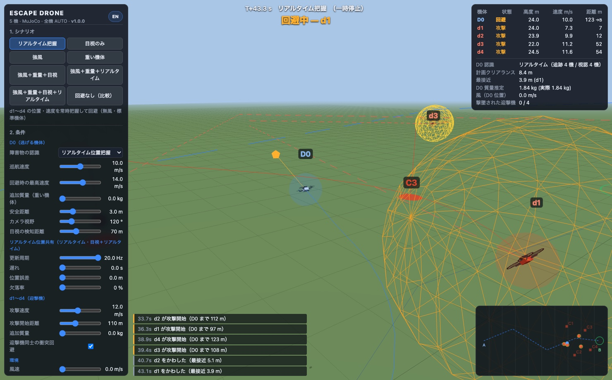

01
3 秒先まで会合点を先読みする、速度空間サンプリング回避
B の手前 C1〜C4 で待機する迎撃機 d1〜d4 は、D0 が攻撃開始距離（既定 110 m）に入ると予測会合点へ向けて全速で突入します。D0 は 20 Hz ごとに水平 24 方向 × 4 速さ × 上下 3 段階の候補速度を生成し、「自分がその速度で飛び、迎撃機が追尾してきたときの 3 秒間の軌道」を前進シミュレーション。安全距離・ルートからのずれ・地面との距離のコストが最小となる回避速度をリアルタイムに選びます。
- 3 秒先読み速度プランナ（20 Hz）
- 迎撃機の会合点予測突入
- 接触時は両機とも即墜落